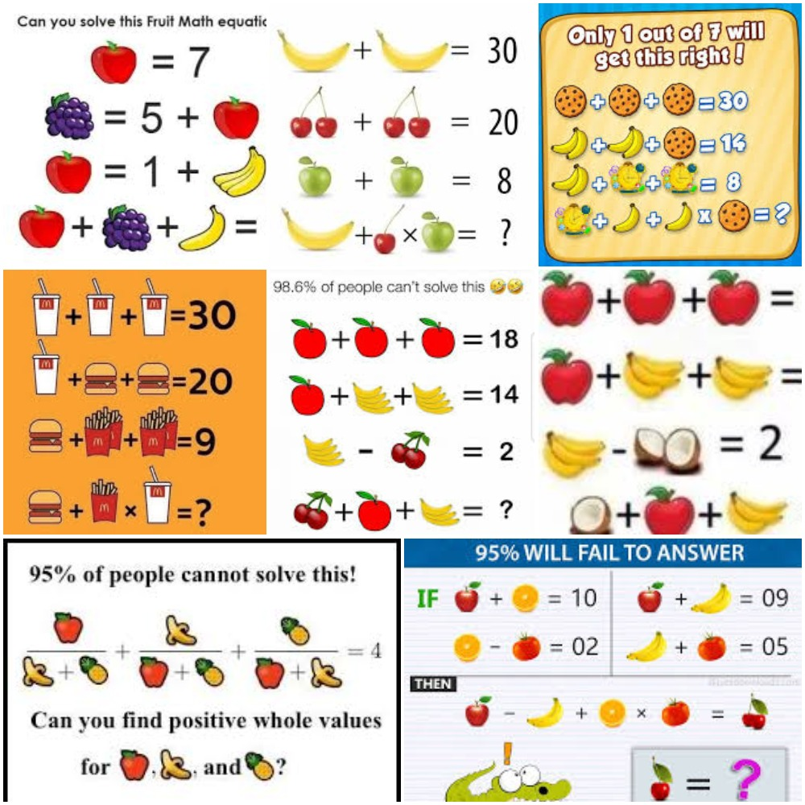
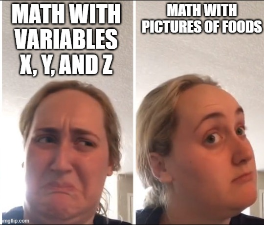
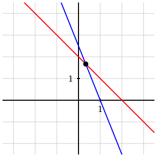
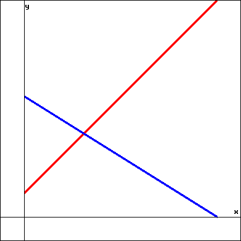

Section 1.1 Linear Equations and Substitution
Some of the material in this section comes from Greg Hartman’s Fundamentals of Matrix Algebra.
Normally, there will be some Prepare material before you are asked to Participate, but this is the first section. Let’s begin, not prepare to begin.
Subsection Participate
Perhaps you’ve seen images like the ones shown below.

Images like the ones above have been frequently shared on social media, prompting this mathematician to reflect that algebra seems more palatable when it’s disguised as puzzles involving food.

Most of the images in the collage above also contain an element of competitiveness — of being able to figure out something that other people have a hard time with. Many of them also contain a visual trick which causes extra confusion or controversy. For example, consider the puzzle in this image.
1
Many of the puzzles in the collage say something like “Only 1 in 7 can solve this!” or “95% of people will fail to answer.”
Activity 1.1.4. Solve a fruit puzzle, image child of figure.
Activity 1.1.6. Solve a fruit puzzle, image child of statement.
The food puzzle above was really setting up a number of algebraic equations.
| Three apples add up to 18. | \(3A=18\) |
| Apple plus 2 bunches of bananas equals 14. | \(A+2B=14\) |
| Bunch of bananas minus cherries equals 2. | \(B-C=2\) |
Solving the puzzle meant finding values for each of the foods that made all the equations true, that is, finding the values of \(A\text{,}\) \(B\text{,}\) and \(C\text{.}\)
2
And then also realizing that the picture of “bunch of bananas” changed so that we really needed to find the value of each banana.
Almost all the food puzzles are these same kinds of equations, called linear equations. Before defining what that means in general, let’s explore another example from both graphical and algebraic perspectives.
Activity 1.1.7.
(a)
Consider the equation \(x+y=2\text{.}\) When \(x=0\) and \(y=2\text{,}\) the equation is true, so I’ve plotted the point \((0,2)\text{.}\) Think of some more values of \(x\) and \(y\) that satisfy the equation, and plot them as points.
What do you notice about all the \((x,y)\) points that satisfy \(x+y=2\text{?}\)
(b)
Now consider the equation \(15x+6y=15\text{.}\) When \(x=1\) and \(y=0\text{,}\) the equation is true, so I’ve plotted the point \((1,0)\text{.}\) Think of some more values of \(x\) and \(y\) that satisfy the equation (your answers don’t have to be whole numbers!), and plot them as points.
What does the graph of \(15x+6y=15\) look like?
(c)
The graphs of \(x+y=2\) and \(15x+6y=15\) are shown in the image below.

What does the point of intersection mean, and what are its coordinates?
Example 1.1.10. Sony and The Interview.
Below is an image from a New York Times article about a movie The Interview
The article is about the release of the movie, which generated controversy and so was released direct to streaming. Sony reported that the movie made about 15 million dollars total, split between $15 sales and $6 rentals, and also that there were about 2 million transactions in total
Then the author of the article claimed that Sony did not release how many of the transactions were rentals and how many were sales. Can you do better than the author of the article and figure out how many of the transactions were sales and how many were rentals?
Hint.
Try using \(x\) for the number of sales and \(y\) for the number of rentals. What equations do you get from the information about the total number of transactions, and total dollar amount earned? Perhaps refer to Activity 1.1.7.
Solution.
If \(x\) is the number of sales and \(y\) is the number of rentals, then \(x+y=2\) million transactions. Also, \(15x+6y=15\) million dollars of revenue, since each sale cost $15 and each rental cost $6.
We can solve this set of two linear equations by substitution: solving for one of the variables and substituting it into the other equation. Rearranging the first equation we get that
\begin{equation*}
y=2-x\text{,}
\end{equation*}
and then plugging that in for \(y\) in the second equation gives
\begin{equation*}
15x+6(2-x)=15\text{.}
\end{equation*}
Multiplying out gives
\begin{equation*}
15x+12-6x=15\text{,}
\end{equation*}
and combining like terms results in
\begin{equation*}
9x+12=15\text{.}
\end{equation*}
Subtracting the 12 from both sides gives
\begin{equation*}
9x=3\text{,}
\end{equation*}
and dividing both sides by 9 yields
\begin{equation*}
x=\frac{1}{3}\text{.}
\end{equation*}
So one-third of a million, or roughly \(333,333\) transactions were sales. To find the number of rentals, we can substitute this value back into either equation, but \(x+y=2\) seems easier. Then
\begin{equation*}
\frac{1}{3}+y=2\text{,}
\end{equation*}
which means that
\begin{equation*}
y=2-\frac{1}{3}=\frac{5}{3}\text{,}
\end{equation*}
and \(\frac{5}{3}\) of a million is roughly \(1,666,667\) transactions.
Example 1.1.11. Jar of multicolored marbles.
Suppose a jar contains red, blue and green marbles. You are told that there are a total of \(30\) marbles in the jar; there are twice as many red marbles as green ones; the number of blue marbles is the same as the sum of the red and green marbles. How many marbles of each color are there?
Solution.
Let’s let \(r\) represent the number of red marbles, and let \(b\) and \(g\) denote the number of blue and green marbles, respectively. We can use the given statements about the marbles in the jar to create some equations.
Since we know there are \(30\) marbles in the jar, we know that
\begin{equation}
r+b+g=30\text{.}\tag{1.1.1}
\end{equation}
Also, we are told that there are twice as many red marbles as green ones, so we know that
\begin{equation}
r=2g\text{.}\tag{1.1.2}
\end{equation}
Finally, we know that the number of blue marbles is the same as the sum of the red and green marbles, so we have
\begin{equation}
b = r+g\text{.}\tag{1.1.3}
\end{equation}
There are many ways to use this information to find the solution. One way is to combine ideas from equations (1.1.2) and (1.1.3); in (1.1.3) replace \(r\) with \(2g\text{.}\) This gives us
\begin{equation}
b = 2g+g = 3g\text{.}\tag{1.1.4}
\end{equation}
We can then combine equations (1.1.1), (1.1.2) and (1.1.4) by replacing \(r\) in (1.1.1) with \(2g\) as we did before, and replacing \(b\) with \(3g\) to get
\begin{align}
r+b+g \amp = 30\notag\\
2g + 3g+g \amp =30\notag\\
6g\amp =30\notag\\
g\amp =5\tag{1.1.5}
\end{align}
We can now use equation (1.1.5) to find \(r\) and \(b\text{;}\) we know from (1.1.2) that \(r = 2g = 10\) and then since \(r+b+g = 30\text{,}\) we easily find that \(b = 15\text{.}\)
All of the examples we’ve seen so far have involved linear equations. It turns out that linear equations are at the heart of many modern applications: data science, sports analytics, graphics, machine learning, artificial intelligence, and so on. Let’s define what linear equations are.
Definition 1.1.12. Linear Equation.
A linear equation is an equation that can be written in the form
\begin{equation*}
a_1x_1+a_2x_2+\cdots+a_nx_n = c
\end{equation*}
where the \(x_i\) are variables (the unknowns), the \(a_i\) are coefficients (numbers), and \(c\) is a constant.
A system of linear equations is a set of linear equations that involve the same variables.
A solution to a system of linear equations is a set of values for the variables \(x_i\) such that each equation in the system is satisfied.
So in Example 1.1.11, when we answered “how many marbles of each color are there?,” we were also answering “find a solution to a certain system of linear equations.”
Activity 1.1.13. Multiple-Choice, Linear or Nonlinear.
For each of the following equations, use Definition 1.1.12 to decide whether the equation is linear or not.
(a)
- Linear
- The equation has the correct form: it is a sum of variables multiplied by numbers (that happen to be 1), which add up to equal a constant.
- Not linear
- The equation \(1x+1y=2\) does have the form \(a_1x+a_2x_2=c\text{,}\) because it is a sum of variables multiplied by numbers (that happen to be 1), which add up to equal a constant.
\begin{equation*}
x+y=2
\end{equation*}
(b)
- Linear
- The equation does not have the correct form because the variables \(x\) and \(y\) are multiplied together, not multiplied by numbers and added.
- Not linear
- The variables can’t be multiplied together in a linear equation.
\begin{equation*}
xy+z=2
\end{equation*}
(c)
- Linear
- It doesn’t matter for being linear or not that we have to rearrange the equation to see the correct form appear.
- Not linear
- It doesn’t matter for being linear or not that we have to rearrange the equation to see the correct form appear. This is the same as \(x+y=2\text{,}\) which is a sum of variables multiplied by numbers (that happen to be 1), which add up to equal a constant.
\begin{equation*}
x=2-y
\end{equation*}
(d)
- Linear
- The equation does not have the correct form; the variables in a linear equation cannot be raised to exponents other than 1.
- Not linear
- The variables in a linear equation cannot be raised to exponents other than 1.
\begin{equation*}
x^2-5y=0
\end{equation*}
(e)
- Linear
- The equation does not have the correct form; the variables in a linear equation can’t be arguments of functions like sine or natural log.
- Not linear
- The variables in a linear equation can’t be arguments of functions like sine or natural log.
\begin{equation*}
\sin(x_1)+3x_2=2
\end{equation*}
(f)
- Linear
- The variables are being multiplied by numbers and added up to equal a number.
- Not linear
- The variables are \(y_1\text{,}\) \(y_3\text{,}\) and we can assume \(y_2\text{.}\) They are being multiplied by numbers, since since \(\sqrt{5}\text{,}\) \(\frac{1}{2}\text{,}\) and 0 are numbers, and are being added up to equal a number, since \(-\pi\) is a number.
\begin{equation*}
\sqrt{5}y_1-\frac{y_3}{2}=-\pi
\end{equation*}
An example of a system of linear equations is
\begin{align*}
x_1-x_2+x_3+x_4\amp =1\\
2x_1+3x_2+x_4 \amp = 25\\
x_2+x_3\amp =10
\end{align*}
It is important to notice that not all equations used all of the variables (it is more accurate to say that the coefficients can be \(0\text{,}\) so the last equation could have been written as \(0x_1+x_2+x_3+0x_4 = 10\)). Also, just because we have four unknowns does not mean we have to have four equations. We could have had fewer, even just one, and we could have had more.
At this stage, we have yet to discuss how to efficiently find a solution to a system of linear equations. That is a goal for the upcoming sections. Right now we focus on identifying linear equations and solving some smaller systems of equations using substitution.
Summary.
- Linear equations are equations which can be written in the form\begin{equation*} a_1x_1+a_2x_2+\cdots+a_nx_n = c\text{,} \end{equation*}where the \(x_i\) are variables, the \(a_i\) are coefficients, and \(c\) is a constant.
- A system of linear equations is a set of linear equations referring to the same variables. Solving a system of linear equations means finding values for the variables such that all the equations are true with those values.
- Systems of linear equations are behind many important applications in physics, engineering, and computer science, and solving linear systems will be a significant part of this course. For now though, we use substitution and wait for a better way.
Subsection Practice
Exercise 1.1.1. Find the point of intersection.
Find the point of intersection of the lines \(y = x + 1\) and \(2x+3y=14\text{.}\)

The point of intersection is \((x,y)\) where \(x=\) and \(y=\).
Exercise 1.1.2. Two variable substitution.
The solution of the linear system
\begin{equation*}
\begin{aligned}
{4}x+y \amp = {-21}\\
{4}x-{5}y \amp = {-15}
\end{aligned}
\end{equation*}
is
\(x=\) and \(y=\)
Exercise 1.1.3. Marbles in a Jar.
Suppose a jar contains red, blue and green marbles. You are told that there are a total of \({48}\) marbles in the jar; there are twice as many red marbles as green ones; the number of blue marbles is the same as the sum of the red and green marbles. How many marbles of each color are there?
\(g=\)
\(r=\)
\(b=\)
Exercise 1.1.4. Substitution in a 3-variable system.
Solve the system:
\begin{equation*}
\begin{aligned}
{-8x_{1}+7x_{2}+7x_{3}} \amp = 15\\
{5x_{2}-8x_{3}} \amp = 18\\
{-4x_{3}} \amp = 4
\end{aligned}
\end{equation*}
\((x_1, x_2, x_3) = \bigg(\) , , \(\bigg)\)
Exercise 1.1.5. Another 3-variable system.
Solve the system:
\begin{equation*}
\begin{aligned}
{6x_{1}+6x_{2}-2x_{3}} \amp = -8\\
{6x_{2}-2x_{3}} \amp = -14\\
{-x_{1}+3x_{3}} \amp = 11
\end{aligned}
\end{equation*}
\((x_1, x_2, x_3) = \bigg(\) , , \(\bigg)\)
Exercises Additional Practice
Linear equation: yes or no.
In the following exercises, state whether or not the given equation is linear.
1.
\(x+y+z = 10\)
Answer.
y
2.
\(xy + yz+ xz = 1\)
Answer.
n
3.
\(-3x + 9 = 3y - 5z+ x-7\)
Answer.
y
4.
\(\sqrt{5}y + \pi x =-1\)
Answer.
y
5.
\((x-1)(x+1) = 0\)
Answer.
n
6.
\(\sqrt{x_1^2+x_2^2} = 25\)
Answer.
n
7.
\(x_1 + y + t = 1\)
Answer.
y
8.
\(\frac{1}{x} + 9 = 3\cos(y) - 5z\)
Answer.
n
9.
\(\cos(15)y + \frac{x}{4} =-1\)
Answer.
y
10.
\(2^x + 2^y = 16\)
Answer.
n
Solve the System.
In the following exercises, solve the system of linear equations.
11.
\begin{align*}
x + y \amp = -1\\
2x - 3y \amp = 8
\end{align*}
Answer.
\(x = 1, y=-2\)
12.
\begin{align*}
2x - 3y\amp = 3\\
3x + 6y\amp = 8
\end{align*}
Answer.
\(x = 2, y=\frac13\)
13.
\begin{align*}
x - y + z\amp = 1\\
2x + 6y - z\amp = -4\\
4x - 5y + 2z\amp = 0
\end{align*}
Answer.
\(x = -1, y=0,z=2\)
14.
\begin{align*}
x + y - z \amp = 1 \\
2x + y \amp = 2\\
y + 2z\amp = 0
\end{align*}
Answer.
\(x =1,\ y=0,\ z=0\)
15.
A farmer looks out his window at his chickens and pigs. He tells his daughter that he sees \(62\) heads and \(190\) legs. How many chickens and pigs does the farmer have?
Answer.
\(29\) chickens and \(33\) pigs
16.
A lady buys \(20\) trinkets at a yard sale. The cost of each trinket is either \(\$ 0.30\) or \(\$ 0.65\text{.}\) If she spends \(\$8.80\text{,}\) how many of each type of trinket does she buy?
Answer.
\(12\) of the \(\$ 0.30\) trinkets, \(8\) of the \(\$ 0.65\) trinkets